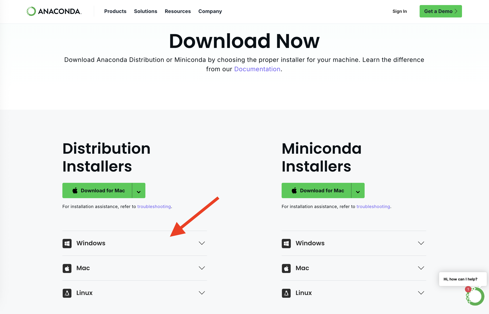
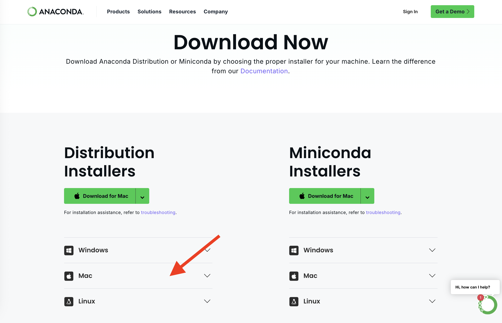
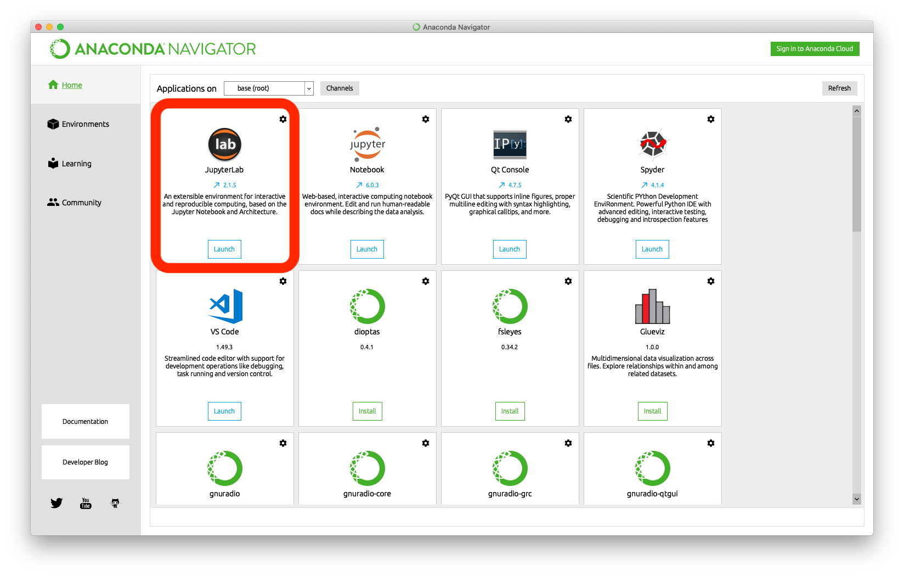

35 Anaconda Installation
Anaconda Distribution is one of the most popular platforms for doing data science with Python. It’s designed to make it easier for beginners and professionals alike to set up their Python environment with all the essential tools for analysis, visualization, and machine learning.
When you install Anaconda, you get much more than just Python, you get:
- Python interpreter: The core software that runs Python code.
- Preinstalled libraries: Anaconda includes many of the most commonly used Python packages in data science—like Pandas, NumPy, Matplotlib, SciPy, and Scikit-learn—so you don’t need to install them separately. If you’re not familiar with what packages are yet, don’t worry—we’ll be learning about them as we proceed through this course.
- Conda: A package and environment manager that makes it easy to install, update, and manage libraries (like Pandas and NumPy) and different Python environments.
- Jupyter Notebook and JupyterLab: Interactive tools for writing, running, and documenting code in a web-based notebook format—perfect for data analysis and experimentation.
Here’s why Anaconda is a great option for beginners:
- Everything you need is bundled together—no need to worry about installing packages one by one.
- It comes with a graphical interface called Anaconda Navigator, which makes it easy to launch tools without using the command line.
- It’s widely used in both academic and professional environments, so learning to use Anaconda gives you experience with real-world tools.
35.1 Installing Anaconda
You may hear about a tool called Miniconda, which is a lightweight alternative to Anaconda. While Miniconda gives you more control by starting with a barebones Python environment, it requires you to install everything manually. In this course, we recommend Anaconda because it comes preloaded with everything you need for data science—and it’s much easier to get started with. If you’re new to Python, stick with Anaconda.
Before You Begin
You’ll need:
- A stable internet connection
- Make sure your operating system is current enough for the Anaconda install. See requirements here.
- ~3–4 GB of free disk space
- A bit of patience—it’s a large install!
For Windows Users
- Go to https://www.anaconda.com/products/distribution
- Click “Download” and choose the Windows installer (64-bit) 
- Once downloaded, open the installer
- Follow the prompts:
- Choose “Just Me” (recommended)
- Leave default install location
- IMPORTANT: When asked about adding Anaconda to your PATH: Keep it unchecked (recommended)
- Click Install and wait (~5–10 mins)
- After installation, click “Finish”
- Verify your installation: The Anaconda Navigator should automatically open after successful installation of Anaconda Distribution. If it does not, you should be able to search for “Anaconda Navigator” in the taskbar search.
For more installation instructions you can find the Anaconda documentation for Windows installation here. You can also view the following video:
For Mac Users
- Go to https://www.anaconda.com/products/distribution
- Download the macOS (Intel or M1/M2) installer that matches your hardware 
- Open the
.pkgfile and follow the installation instructions- Grant permission when prompted
- Leave default settings
- Verify your installation: The Anaconda Navigator should automatically open after successful installation of Anaconda Distribution. If it does not, you should be able to search for “Anaconda Navigator” using Spotlight (Cmd + Space → “Anaconda Navigator”)
For more installation instructions you can find the Anaconda documentation for Windows installation here. You can also view the following video:
35.2 Anaconda Navigator
Anaconda Navigator is the graphical interface included with Anaconda that makes it easier to access your development tools without needing to use the command line.
When you launch Navigator, you’ll see a dashboard of available applications, including but not limited to:
- Jupyter Notebook – A lightweight, web-based interface to write and run Python code interactively.
- JupyterLab – A more advanced interface for working with notebooks, code files, terminals, and data.
- Spyder – A scientific development environment similar to RStudio (not used in this course).
- VS Code – If installed, you may see a launcher for Visual Studio Code.

You can also manage environments and packages through Navigator, but for now, your main focus will be on using it to launch Jupyter Notebook or JupyterLab.
This simple interface removes a lot of the friction of getting started with Python and is part of what makes Anaconda such a great option for beginners.
Anaconda Navigator is a powerful application that can do much more than what we’ve covered here. If you’re curious and want to explore its full functionality, you can read more at here or watch this helpful overview video:
That said, don’t feel pressured to learn it all at once—some of the functionality may feel overwhelming at first, and that’s perfectly okay. We’ll ease into the tools you need as the course progresses.
35.3 Launching Jupyter and Running Your First Notebook
Now that you’ve successfully installed Anaconda and explored the Navigator interface, it’s time to put it to use. One of the most common tools you’ll use as a data scientist is a Jupyter Notebook—an interactive coding environment that runs in your web browser and lets you combine code, text, and output in one place. In this section, we’ll walk you through how to launch a notebook and run your very first line of code using your newly installed Anaconda environment.
You may notice that both Jupyter Notebook and JupyterLab are available in Anaconda Navigator. While they both allow you to write and execute code in the Jupyter Notebook format, JupyterLab is the newer, more modern interface. It provides a more flexible workspace, supports multiple tabs and file types, and integrates better with other tools. In this course, we’ll be using JupyterLab by default because of these added capabilities—but feel free to explore both if you’re curious!
Once you’ve installed Anaconda:
Open Anaconda Navigator: Start by opening the Anaconda Navigator application from your system’s start menu or application launcher.
Locate JupyterLab: Within the Navigator interface, you’ll see a list of available applications. Find the “JupyterLab” icon. 
Launch JupyterLab: Click the launch button at the bottom of the JupyterLab icon.
- This will open a new tab in your default web browser at a local address like http://localhost:8888.
- This web-based interface acts as your coding workspace. It allows you to create and run notebooks, write scripts, view files, and manage your data science projects—all in one place. And you interact with this interface through your browser.
Create a new notebook: In the Jupyter interface click New → Python 3 Notebook and this will launch a new Jupyter notebook.
Write Python code: In the first cell, type the following and press Shift + Enter to run the code:
print("Hello Anaconda")You should see:
Hello Anaconda
That’s it! You’ve set up your local Python data science environment.
35.4 Troubleshooting Tips
If you run into issues during installation or while launching tools like Anaconda Navigator or JupyterLab, don’t worry—it’s common when working with new software. Below are some tips that can help you troubleshoot the most common problems:
Anaconda Installation Issues
- The installer won’t open or crashes: Make sure your system meets the requirements and try re-downloading the installer from the official site.
- Installation is stuck or taking too long: This process can take several minutes. If it seems frozen for more than 15–20 minutes, cancel the installation, restart your machine, and try again.
- Accidentally added Anaconda to PATH and things broke: Try uninstalling and reinstalling Anaconda, and leave the PATH option unchecked this time (recommended). You can follow the steps in this official guide to uninstall Anaconda properly:
Problems Starting JupyterLab
- Clicking “Launch” in Navigator does nothing:
- Restart Navigator or your computer.
- Try launching JupyterLab via the command line:
- On Windows: open Anaconda Prompt and type
jupyter lab - On Mac: open Terminal and type
jupyter lab
- On Windows: open Anaconda Prompt and type
- Browser doesn’t open automatically:
- Copy the URL shown in the terminal (e.g.,
http://localhost:8888) and paste it into your browser manually.
- Copy the URL shown in the terminal (e.g.,
- JupyterLab opens but shows an error or doesn’t load:
- Try clearing your browser cache or switching to a different browser.
- Make sure no firewall or antivirus program is blocking access to
localhost.
If all else fails, feel free to reach out to your instructor or teaching assistant for help!
35.5 Additional Resources
Want to explore more about Anaconda and JupyterLab beyond the basics? Here are some helpful resources if you’re curious to dig deeper:
- Anaconda Navigator Documentation: Learn about all the features available through Navigator, including managing environments and installing packages.
- Anaconda Navigator Overview Video: A quick video tour of Navigator’s capabilities.
- JupyterLab Documentation: Explore JupyterLab’s interface, features, and how to extend its functionality.
These resources go into far more detail than we’ll need in this course—so don’t feel pressured to master everything right away. Use them as a reference when you’re ready to explore more.